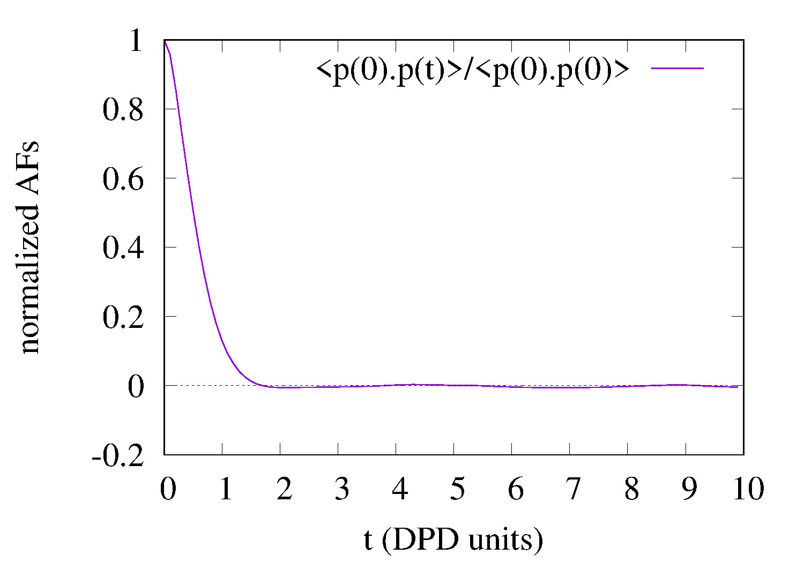

Autocorrelation functions of individual charge dipole moments in DL_MESO_DPD¶
Purpose of Module¶
This module, gen_moldipaf.f90, is a post-processing utility for
DL_MESO_DPD, the Dissipative Particle Dynamics (DPD) code from the DL_MESO package.
It processes the trajectory (HISTORY) files to obtain the charge dipole moments
of all the (neutral) molecules in the system, and subsequently computes
the dipole autocorrelation functions (DAFs) for individual molecules, for each molecule type.
It produces a file MDIPAFDAT containing both the un-normalized and
normalized DAFs, and, optionally, a file MDIPAFFFT containing the
Fourier transform (FT) of the latter.
It is analogous to gen_dipoleaf.f90, but deals with individual (for a
single molecule) rather then macroscopic (for the simulated volume) charge dipole moments.
The module can be applied to systems including molecules with a generic charge structure, as long as each molecule is neutral (otherwise the charge dipole moment would be frame-dependent) [1]. CAVEAT: this module only analyzes molecular trajectories. If a charged molecule is present, an error message will be given, while unbonded charges would not be detected and would lead to erroneous results. Therefore please keep in mind to not apply the module to systems with unbonded charges.
The charge dipole moment of a neutral molecule is
where are the bead positions and their charges. The total charge dipole moment of the simulated volume is . If more than one molecular species are present, one can split into the different species contributions: , where is the number of molecule types (definitions) and the number of molecules of type .Given a scalar quantity A, its non-normalized autocorrelation function (AF) is
, where indicates an average over trajectories. The normalized one is [2].Here for the
-th molecular species we replace with , and the product with a scalar product. In this case the average over trajectories translates into two sums, one over different time origins and one over molecules of species .The output file MDIPAFDAT contains the DAFs for each molecular species and, at the end of the file, the DAF obtained averaging over all the particles. The output file MDIPAFFFT contains the FT of these functions, in the same order.
More in detail, the header of the file MDIPAFDAT contains the simulation title and a line with the number of snapshots in HISTORY and of those used for the AFs (naf). Then a block follows for each molecule type, started by the {molecule name}, then three columns of data,
. It is intended that in any block only the molecules for a given species are summed over. The last block is called {all species} and refers to an average over all the molecules.The header of the file MDIPAFFFT is as for MDIPAFDAT (notice that the number of points for the FT is also set equal to naf). Then a block follows for each molecule type, started by the molecule name, then three columns of data,
, where is the discrete FT of .Possible uses of the output file are: to analyze it to obtain the decay time of autocorrelations, which can be used to define an efficient sampling of the simulation; to compare it with the analogous macroscopic one obtained for all the molecules (of a given type) in the system (see Autocorrelation functions of charge dipole moments in DL_MESO_DPD).
Background Information¶
The base code for this module is DL_MESO_DPD, the Dissipative Particle Dynamics code from the mesoscopic simulation package DL_MESO, developed by M. Seaton at Daresbury Laboratory. This open source code is available from STFC under both academic (free) and commercial (paid) licenses. The module is to be used with DL_MESO in its last released version, version 2.6 (dating November 2015).
Also, the present module requires the library FFTW (version 3.x) to be installed.
Testing¶
The present module gen_moldipaf.f90 is compiled with the available Fortran90 compiler, e.g.:
gfortran -lfftw3 -lm -o gen_moldipaf.exe gen_moldipaf.f90
and the executable must be in the same directory of the HISTORY* files to be analyzed. In case the file fftw3.f, containing constants that are necessary for the Fourier transform, is not found by the compiler, a simple way out is to copy it in the same directory where the module is run. The user is asked to provide the number of nodes used to run the simulation, the electric charges for all the types of beads and the maximum number of snapshots to be used for the AFs (naf). Finally, the last input is a switch for the Fourier transform: 1 for yes, 0 (or any other integer) for no.
To input these parameters one can enter them from the keyboard or write them into a text file (say, input.txt), one per line (in the right order) and run the program in this way:
gen_dipoleaf.exe < input.txt
Test: water in oil
As a test, we suggest to consider a fluid made of harmonically bonded dimers
. Fixing appropriately the partial charge and the Bjerrum length this system mimics water in an oil background, as long as the dielectric properties are concerned. For more details about this model, please see the page Test case: a dimer solvent.Run DL_MESO_DPD using for the CONTROL file
DL_MESO charged harmonic dimers with dpd repulsion
volume 64.0
temperature 1.0
cutoff 1.0
timestep 0.01
steps 70000
equilibration steps 20000
traj 20000 10
stats every 100
stack size 100
print every 100
job time 7200.0
close time 10.0
ensemble nvt mdvv
ewald sum 1.0 5 5 5
bjerrum 42.0
smear gauss equal
finish
and for the FIELD file
DL_MESO charged harmonic dimers with dpd repulsion
SPECIES 2
solp 1.0 0.46 0
solm 1.0 -0.46 0
MOLECULES 1
DIMER
nummols 96
beads 2
solp 0.0 0.0 0.0
solm 0.1 0.0 0.0
bonds 1
harm 1 2 5.0 0.0
finish
INTERACTIONS 3
solp solp dpd 25.0 1.0 4.5
solm solm dpd 25.0 1.0 4.5
solp solm dpd 25.0 1.0 4.5
CLOSE
Analyzing the HISTORY file with gen_moldipaf.exe choosing naf=100, i.e., using this input.txt (which assumes a serial run)
1
0.46
-0.46
100
1
this output is printed on the standard output
Number of nodes used in calculations ?
nchist: 0 96 0 0 0 0 0 0 0 0
Charges for SPECIES type solp :
Charges for SPECIES type solm :
chg= 0.4600 -0.4600
Number of time steps in autocorrelation profile?
switch for FFT computation? (1=yes, 0 or any other integer=no)
The first line shows the histogram of cluster sizes: in this case, it correctly gives 96 molecules of two beads. Since internally the module checks that each molecule is a connected cluster [1], this line should always give a histogram with the molecule sizes (by default, shown up to ten beads).
The MDIPAFDAT file is (only the first fifteen lines are shown)
DL_MESO charged harmonic dimers with dpd repulsion
5001 100
DIMER
0.000000E+00 1.419184E-01 1.000000E+00
1.000000E-01 1.360256E-01 9.584780E-01
2.000000E-01 1.217816E-01 8.581103E-01
3.000000E-01 1.045570E-01 7.367406E-01
4.000000E-01 8.750295E-02 6.165724E-01
5.000000E-01 7.161709E-02 5.046358E-01
6.000000E-01 5.723649E-02 4.033057E-01
7.000000E-01 4.466587E-02 3.147293E-01
8.000000E-01 3.406310E-02 2.400189E-01
9.000000E-01 2.537519E-02 1.788013E-01
and the MDIPAFFFT file is (only the first fifteen lines are shown)
DL_MESO charged harmonic dimers with dpd repulsion
5001 100
DIMER
0.000000E+00 6.013063E+00 0.000000E+00
6.283185E-01 5.915405E+00 -1.378369E+00
1.256637E+00 5.283007E+00 -2.365590E+00
1.884956E+00 4.077657E+00 -3.150028E+00
2.513274E+00 3.076368E+00 -3.326590E+00
3.141593E+00 2.244706E+00 -3.195932E+00
3.769911E+00 1.631808E+00 -2.873471E+00
4.398230E+00 1.273571E+00 -2.521504E+00
5.026548E+00 1.024723E+00 -2.219809E+00
5.654867E+00 8.805952E-01 -1.950491E+00
Below we show a plot of the normalized AF
(obtained using the first and third columns of MDIPAFDAT) {kind=link}
Source Code¶
1 2 3 4 5 6 7 8 9 10 11 12 13 14 15 16 17 18 19 20 21 22 23 24 25 26 27 28 29 30 31 32 33 34 35 36 37 38 39 40 41 42 43 44 45 46 47 48 49 50 51 52 53 54 55 56 57 58 59 60 61 62 63 64 65 66 67 68 69 70 71 72 73 74 75 76 77 78 79 80 81 82 83 84 85 86 87 88 89 90 91 92 93 94 95 96 97 98 99 100 101 102 103 104 105 106 107 108 109 110 111 112 113 114 115 116 117 118 119 120 121 122 123 124 125 126 127 128 129 130 131 132 133 134 135 136 137 138 139 140 141 142 143 144 145 146 147 148 149 150 151 152 153 154 155 156 157 158 159 160 161 162 163 164 165 166 167 168 169 170 171 172 173 174 175 176 177 178 179 180 181 182 183 184 185 186 187 188 189 190 191 192 193 194 195 196 197 198 199 200 201 202 203 204 205 206 207 208 209 210 211 212 213 214 215 216 217 218 219 220 221 222 223 224 225 226 227 228 229 230 231 232 233 234 235 236 237 238 239 240 241 242 243 244 245 246 247 248 249 250 251 252 253 254 255 256 257 258 259 260 261 262 263 264 265 266 267 268 269 270 271 272 273 274 275 276 277 278 279 280 281 282 283 284 285 286 287 288 289 290 291 292 293 294 295 296 297 298 299 300 301 302 303 304 305 306 307 308 309 310 311 312 313 314 315 316 317 318 319 320 321 322 323 324 325 326 327 328 329 330 331 332 333 334 335 336 337 338 339 340 341 342 343 344 345 346 347 348 349 350 351 352 353 354 355 356 357 358 359 360 361 362 363 364 365 366 367 368 369 370 371 372 373 374 375 376 377 378 379 380 381 382 383 384 385 386 387 388 389 390 391 392 393 394 395 396 397 398 399 400 401 402 403 404 405 406 407 408 409 410 411 412 413 414 415 416 417 418 419 420 421 422 423 424 425 426 427 428 429 430 431 432 433 434 435 436 437 438 439 440 441 442 443 444 445 446 447 448 449 450 451 452 453 454 455 456 457 458 459 460 461 462 463 464 465 466 467 468 469 470 471 472 473 474 475 476 477 478 479 480 481 482 483 484 485 486 487 488 489 490 491 492 493 494 495 496 497 498 499 500 501 502 503 504 505 506 507 508 509 510 511 512 513 514 515 516 517 518 519 520 521 522 523 524 525 526 527 528 529 530 531 532 533 534 535 536 537 538 539 540 541 542 543 544 545 546 547 548 549 550 551 552 553 554 555 556 557 558 559 560 561 562 563 564 565 566 567 568 569 570 571 572 573 574 575 576 577 578 579 580 581 582 583 584 585 586 587 588 589 590 591 592 593 594 595 596 597 598 599 600 601 602 603 604 605 606 607 608 609 610 611 612 613 614 615 616 617 618 619 620 621 622 623 624 625 626 627 628 629 630 631 632 633 634 635 636 637 638 639 640 641 642 643 644 645 646 647 648 649 650 651 652 653 654 655 656 657 658 659 660 661 662 663 664 665 666 667 668 669 670 671 672 673 674 675 676 677 678 679 680 681 682 683 684 685 686 687 688 689 690 691 692 693 694 695 696 697 698 699 700 701 702 703 704 705 706 707 708 709 710 711 712 713 714 715 716 717 718 719 720 721 722 723 724 725 726 727 728 729 730 731 732 733 734 735 736 737 738 739 740 741 742 743 744 745 746 747 748 749 750 751 752 753 754 755 756 757 758 759 760 761 762 763 764 765 766 767 768 769 770 771 772 773 774 775 776 777 778 779 780 781 782 783 784 785 786 787 788 789 790 791 792 793 794 795 796 797 798 799 800 801 802 803 804 805 806 807 808 809 810 811 812 813 814 815 816 817 818 819 820 821 822 823 824 825 826 827 828 829 830 831 832 833 834 835 836 837 838 839 840 841 842 843 844 845 846 847 848 849 850 851 852 853 854 855 856 857 858 859 860 861 862 863 864 865 866 867 868 869 870 871 872 873 874 875 876 877 878 879 880 881 882 883 884 885 886 887 888 889 890 891 892 | PROGRAM gen_moldipaf
!*************************************************************************************
! module to compute autocorrelation functions of individual charge dipole moments in
! DL_MESO_DPD
!
! authors: m. a. seaton and s. chiacchiera, March 2017 (amended August 2017)
!*************************************************************************************
IMPLICIT none
INTEGER, PARAMETER :: dp = SELECTED_REAL_KIND (15, 307)
INTEGER, PARAMETER :: ntraj=10
REAL(KIND=dp), PARAMETER :: pi=3.141592653589793_dp
CHARACTER(80) :: text, a2
CHARACTER(8), ALLOCATABLE :: namspe (:), nammol (:)
CHARACTER(6) :: chan
CHARACTER(8) :: a1
INTEGER, ALLOCATABLE :: ltp (:), ltm (:), mole (:), bndtbl (:,:), beads (:), bonds (:)
INTEGER, ALLOCATABLE :: nbdmol (:)
INTEGER, ALLOCATABLE :: visit (:), from (:)
INTEGER :: nrtout
INTEGER :: chain, imol, ioerror, i, numtraj, j, k, l, nmoldef, ibond
INTEGER :: nspe, numnodes, nbeads, nusyst, nmbeads, nsyst, nbonds, numbond, global, species, molecule
INTEGER :: nummol, lfrzn, rnmol, keytrj, srfx, srfy, srfz
INTEGER :: n1, n2, n3, n4
INTEGER :: bead1, bead2
INTEGER :: naf, nsamp
REAL(KIND=dp), ALLOCATABLE :: xxx (:), yyy (:), zzz (:)
REAL(KIND=dp), ALLOCATABLE :: nmol (:), chg (:), molchg (:)
REAL(KIND=dp), ALLOCATABLE :: dipx_box (:), dipy_box (:), dipz_box (:)
REAL(KIND=dp), ALLOCATABLE :: dipx (:), dipy (:), dipz (:)
REAL(KIND=dp), ALLOCATABLE :: mdipdata (:,:,:), corrdata (:)
REAL(KIND=dp) :: volm, dimx, dimy, dimz, shrdx, shrdy, shrdz
REAL(KIND=dp) :: amass, rcii
REAL(KIND=dp) :: time, mbeads, mglobal, x, y, z, vx, vy, vz, fx, fy, fz
REAL(KIND=dp) :: r1, r2, r3, r4
REAL(KIND=dp) :: dt, time0, domega
REAL(KIND=dp) :: dx0, dy0, dz0
INTEGER :: nftpts
COMPLEX(KIND=dp), ALLOCATABLE :: fftdata (:)
LOGICAL :: eof, lfft
! Get number of nodes
WRITE (*,*) "Number of nodes used in calculations ?"
READ (*,*) numnodes
ALLOCATE (beads (numnodes), bonds (numnodes))
! Determine if HISTORY files exist
IF (numnodes>1) THEN
INQUIRE (file = 'HISTORY000000', EXIST = eof)
ELSE
INQUIRE (file = 'HISTORY', EXIST = eof)
END IF
IF (.NOT. eof) THEN
WRITE (*,*) "ERROR: cannot find HISTORY files"
STOP
END IF
! First reading, where the number of beads, molecules and bonds are determined
! Arrays are filled with names of particles and molecules
! If multiple HISTORY files are present, it is checked they are compatible
numbond = 0
DO j = 1, numnodes
WRITE (chan, '(i6.6)') j-1
IF (numnodes>1) THEN
OPEN (ntraj+j-1, file = 'HISTORY'//chan, access = 'sequential', form = 'unformatted', status = 'unknown')
ELSE
OPEN (ntraj, file = 'HISTORY', access = 'sequential', form = 'unformatted', status = 'unknown')
END IF
IF (j == 1) THEN
READ (ntraj+j-1) nspe, nmoldef, nusyst, nsyst, nbeads, nbonds
READ (ntraj+j-1) dimx, dimy, dimz, volm
READ (ntraj+j-1) keytrj, srfx, srfy, srfz
ELSE
READ (ntraj+j-1) n1, n2, n3, n4, nbeads, nbonds
READ (ntraj+j-1) r1, r2, r3, r4
IF (n1 /= nspe .OR. n2 /= nmoldef .OR. n3 /= nusyst .OR. n4 /= nsyst &
.OR. r1 /= dimx .OR. r2 /= dimy .OR. r3 /= dimz .OR. r4 /= volm) THEN
WRITE (*,*) "ERROR: HISTORY files do not refer to the same system!"
STOP
ENDIF
READ (ntraj+j-1) n1, n2, n3, n4
IF (n1 /= keytrj .OR. n2 /= srfx .OR. n3 /= srfy .OR. n4 /= srfz) THEN
WRITE (*,*) "ERROR: HISTORY files do not refer to the same system!"
STOP
ENDIF
ENDIF
beads (j) = nbeads
bonds (j) = nbonds
numbond = numbond + nbonds
END DO ! loop over nodes
IF (numbond==0) THEN
PRINT *, 'ERROR: no molecules in trajectory data!'
STOP
END IF
IF (srfx == 1 .OR. srfy == 1 .OR. srfz == 1) THEN
WRITE (*,*) "ERROR: Hard walls, electrostatics not implemented in DL_MESO_DPD yet!"
STOP
END IF
IF (srfx == 3 .OR. srfy == 3 .OR. srfz == 3) THEN
WRITE (*,*) "ERROR: System under shear, not implemented yet!"
STOP
END IF
! get number of beads to be tracked when reading trajectory file (molecular beads)
nmbeads = nsyst - nusyst
ALLOCATE (namspe (nspe), nammol (nmoldef))
ALLOCATE (xxx (1:nmbeads), yyy (1:nmbeads), zzz (1:nmbeads))
ALLOCATE (ltp (1:nmbeads), ltm (1:nmbeads), mole (1:nmbeads))
ALLOCATE (nmol (1:nmoldef), nbdmol (1:nmoldef))
ALLOCATE (chg (nspe))
ALLOCATE (bndtbl (numbond, 2))
ALLOCATE (visit (nmbeads), from (nmbeads))
DO j = 1, numnodes
DO i = 1, nspe
IF (j == 1) THEN
READ (ntraj+j-1) namspe (i), amass, rcii, lfrzn
ELSE
READ (ntraj+j-1) a1, amass, rcii, lfrzn
IF (a1 /= namspe (i))THEN
WRITE (*,*) "ERROR: HISTORY files do not refer to the same system!"
STOP
ENDIF
ENDIF
END DO
IF (nmoldef>0) THEN
DO i = 1, nmoldef
IF (j==1) THEN
READ (ntraj+j-1) nammol (i)
ELSE
READ (ntraj+j-1) a1
IF (a1 /= nammol (i))THEN
WRITE (*,*) "ERROR: HISTORY files do not refer to the same system!"
STOP
ENDIF
END IF
END DO
END IF
IF (j == 1) THEN
READ (ntraj+j-1) text
ELSE
READ (ntraj+j-1) a2
IF (a2 /= text) THEN
WRITE (*,*) "ERROR: HISTORY files do not refer to the same system!"
STOP
ENDIF
ENDIF
ENDDO ! end of loop over nodes
! reading of ONLY one HISTORY file till the end to get numtraj
DO i = 1, beads (1)
READ (ntraj) !global, species, molecule, chain
ENDDO
IF (bonds (1)>0) THEN
DO i = 1, bonds (1)
READ (ntraj) !bead1, bead2
END DO
END IF
numtraj = 0
dt = 0.0_dp
time0 = 0.0_dp
DO WHILE (.true.)
READ (ntraj, IOSTAT=ioerror) time, mbeads, dimx, dimy, dimz, shrdx, shrdy, shrdz
IF (ioerror/=0) THEN
EXIT
ELSE
numtraj = numtraj + 1
IF (numtraj==1) time0 = time
nbeads = NINT (mbeads)
SELECT CASE (keytrj)
CASE (0)
DO i = 1, nbeads
READ (ntraj) mglobal, x, y, z
END DO
CASE (1)
DO i = 1, nbeads
READ (ntraj) mglobal, x, y, z, vx, vy, vz
END DO
CASE (2)
DO i = 1, nbeads
READ (ntraj) mglobal, x, y, z, vx, vy, vz, fx, fy, fz
END DO
END SELECT
END IF
END DO
DO j = 1, numnodes
CLOSE (ntraj+j-1)
END DO
dt = (time - time0) / REAL (numtraj-1, KIND=dp)
! Second reading, where arrays are filled with properties of beads and molecules.
! Then, the snapshots of trajectories are read.
DO j = 1, numnodes
WRITE (chan, '(i6.6)') j-1
IF (numnodes>1) THEN
OPEN (ntraj+j-1, file = 'HISTORY'//chan, access = 'sequential', form = 'unformatted', status = 'unknown')
ELSE
OPEN (ntraj, file = 'HISTORY', access = 'sequential', form = 'unformatted', status = 'unknown')
END IF
READ (ntraj+j-1) !nspe, nmoldef, nusyst, nsyst, nbeads, nbonds
READ (ntraj+j-1) !dimx, dimy, dimz, volm
READ (ntraj+j-1) !keytrj, srfx, srfy, srfz
DO i = 1, nspe
READ (ntraj+j-1) !namspe (i), amass, rcii, lfrzn
END DO
DO i = 1, nmoldef
READ (ntraj+j-1) !nammol (i)
END DO
READ (ntraj+j-1) !text
END DO
nummol = 0 !counter for number of molecules
ibond = 0 !counter for bonds
! fill in arrays for beads and bonds
DO j = 1, numnodes
!Build ltp, ltm, mole
DO i = 1, beads (j)
READ (ntraj+j-1) global, species, molecule, chain
IF (global>nusyst .AND. global<=nsyst) THEN
ltp (global-nusyst) = species
ltm (global-nusyst) = molecule
mole (global-nusyst) = chain
nummol = MAX (nummol, chain)
ENDIF
END DO
IF (bonds (j)>0) THEN
! Build bndtbl
DO i = 1, bonds (j)
ibond = ibond + 1
READ (ntraj+j-1) bead1, bead2
bndtbl (ibond, 1) = bead1
bndtbl (ibond, 2) = bead2
END DO
END IF
END DO ! over nodes
IF (ibond /= numbond) THEN
WRITE (*,*) "ERROR: bndtbl is not completely full!"
STOP
ENDIF
bndtbl = bndtbl - nusyst
! obtain connectivity information (needed only once)
CALL connect (nmbeads, numbond, bndtbl, visit, from)
! determine numbers of molecules and beads per molecule type
nmol = 0.0_dp
nbdmol = 0
chain = 0
imol = 0 !necessary to avoid out of bounds
DO i = 1, nmbeads
IF (mole (i) /= chain) THEN
chain = mole (i)
imol = ltm (i)
nmol (imol) = nmol (imol) + 1.0_dp
END IF
IF (imol > 0) nbdmol (imol) = nbdmol (imol) + 1
END DO
DO i = 1, nmoldef
rnmol = NINT (nmol (i))
IF (rnmol>0) THEN
nbdmol (i) = nbdmol (i) / rnmol
END IF
END DO
!Asking the user to input the charges for each particle species
DO i = 1, nspe
WRITE (*,*) "Charges for SPECIES type ", namspe(i)," :"
READ (*,*) chg (i)
END DO
WRITE (*,'("chg=",10(3x,f10.4))') chg
!Checking for charge neutrality of all molecules
ALLOCATE (molchg (nummol))
molchg (:) = 0._dp
DO i = 1, nmbeads
imol = mole (i)
molchg (imol) = molchg (imol) + chg (ltp (i))
END DO
DO i = 1, nummol
IF (ABS (molchg (i)) > 1.d-16) THEN
WRITE (*,*) "molecule number",i," is not neutral! (The dipole moment is frame-dependent)"
WRITE (*,*) "its charge is=", molchg (i)
WRITE (*,*) "its type is=", nammol (i)
STOP
ENDIF
END DO
call check_molecules !checks that beads are labelled as expected
! Get the maximum number of time steps for autocorrelation
! and adjust it if necessary
WRITE (*,*) "Number of time steps in autocorrelation profile? "
READ (*,*) naf
IF (naf<1 .OR. naf> numtraj) naf = numtraj
! Get the switch for FFT computation
WRITE (*,*) "switch for FFT computation? (1=yes, 0 or any other integer=no)"
READ (*,*) n1
lfft = (n1 == 1)
ALLOCATE (mdipdata (4, nummol, numtraj))
ALLOCATE (dipx (nummol), dipy (nummol), dipz (nummol))
!reading trajectories and computing charge dipole moments
ALLOCATE (dipx_box (nmoldef), dipy_box (nmoldef), dipz_box (nmoldef))
eof = .false.
k = 0
DO WHILE (.true.)
READ (ntraj, IOSTAT=ioerror) time, mbeads, dimx, dimy, dimz, shrdx, shrdy, shrdz
IF (ioerror/=0) THEN
eof = .true.
IF (k==0) THEN
WRITE (*,*) 'ERROR: cannot find trajectory data in HISTORY files'
STOP
END IF
EXIT
END IF
k = k + 1
DO j = 1, numnodes
IF (j>1) THEN
READ (ntraj+j-1, IOSTAT=ioerror) time, mbeads, dimx, dimy, dimz, shrdx, shrdy, shrdz
IF (ioerror/=0) THEN
eof = .true.
WRITE (*,*) 'ERROR: End of file reached prematurely - ', k-1, ' timesteps written', &
' to output files'
EXIT
END IF
END IF
nbeads = NINT (mbeads)
SELECT CASE (keytrj)
CASE (0)
DO i = 1, nbeads
READ (ntraj+j-1) mglobal, x, y, z
global = NINT (mglobal)
IF (global>nusyst .AND. global<=nsyst) THEN
xxx (global-nusyst) = x
yyy (global-nusyst) = y
zzz (global-nusyst) = z
END IF
END DO
CASE (1)
DO i = 1, nbeads
READ (ntraj+j-1) mglobal, x, y, z, vx, vy, vz
global = NINT (mglobal)
IF (global>nusyst .AND. global<=nsyst) THEN
xxx (global-nusyst) = x
yyy (global-nusyst) = y
zzz (global-nusyst) = z
END IF
END DO
CASE (2)
DO i = 1, nbeads
READ (ntraj+j-1) mglobal, x, y, z, vx, vy, vz, fx, fy, fz
global = NINT (mglobal)
IF (global>nusyst .AND. global<=nsyst) THEN
xxx (global-nusyst) = x
yyy (global-nusyst) = y
zzz (global-nusyst) = z
END IF
END DO
END SELECT
END DO ! over nodes
call compute_charge_dipoles (dipx_box, dipy_box, dipz_box, dipx, dipy, dipz)
! the dipole components for each individual molecule are stored for all the snapshots
DO j = 1, nummol
mdipdata (1, j, k) = dipx (j)
mdipdata (2, j, k) = dipy (j)
mdipdata (3, j, k) = dipz (j)
mdipdata (4, j, k) = time
END DO
END DO ! end of loop over trajectories
IF (k /= numtraj)THEN
WRITE (*,*) "ERROR: problem with the number of snapshots!"
STOP
END IF
nsamp = numtraj - naf + 1
ALLOCATE (corrdata (naf))
! define FFT size if needed
IF (lfft) THEN
nftpts = naf ! modify here to change the size of the DFT
domega = 2 * pi / (dt * nftpts)
ALLOCATE (fftdata (nftpts))
END IF
! Open output file, compute the autocorrelation and write it there
nrtout = ntraj + numnodes
IF (numtraj>0) THEN
OPEN (nrtout, file='MDIPAFDAT', status='replace')
WRITE (nrtout, '(a80)') text
WRITE (nrtout, '(2i10)') k,naf
WRITE (nrtout, '(/)')
! Open the FT otuput file if needed
IF (lfft) THEN
OPEN (nrtout+1, file='MDIPAFFFT', status='replace')
WRITE (nrtout+1, '(a80)') text
WRITE (nrtout+1, '(2i10)') k,nftpts
WRITE (nrtout+1, '(/)')
END IF
imol = 0 ! counter for molecules
DO j = 1, nmoldef
rnmol = NINT (nmol (j))
corrdata = 0.0_dp
WRITE (nrtout,'(a8)') nammol (j)
IF (lfft) WRITE (nrtout+1,'(a8)') nammol (j)
DO i = 1, nsamp
DO k = imol + 1, imol + rnmol
dx0 = mdipdata (1, k, i)
dy0 = mdipdata (2, k, i)
dz0 = mdipdata (3, k, i)
DO l = 1, naf
corrdata (l) = corrdata (l) + mdipdata (1, k, i+l-1) * dx0 + mdipdata (2, k, i+l-1) * dy0 &
+ mdipdata (3, k, i+l-1) * dz0
END DO
END DO
END DO
corrdata = corrdata / (REAL (nsamp, KIND=dp) * nmol (j))
imol = imol + rnmol
DO i = 1, naf
WRITE (nrtout, '(1p,3e14.6)') REAL (i-1, KIND=dp)*dt, corrdata (i), corrdata (i)/corrdata(1)
END DO
WRITE (nrtout, '(/)')
IF (lfft) THEN
fftdata (:) = corrdata (:)/ corrdata (1) ! adapt here if nftpts differs from naf
call fft (fftdata)
DO i = 1, nftpts
WRITE (nrtout+1, '(1p,3e14.6)') REAL (i-1, KIND=dp)*domega, fftdata (i)
END DO
WRITE (nrtout+1, '(/)')
END IF
END DO
corrdata = 0.0_dp
WRITE (nrtout, '("all species")')
IF (lfft) WRITE (nrtout+1, '("all species")')
DO i = 1, nsamp
DO k = 1, nummol
dx0 = mdipdata (1, k, i)
dy0 = mdipdata (2, k, i)
dz0 = mdipdata (3, k, i)
DO l = 1, naf
corrdata (l) = corrdata (l) + mdipdata (1, k, i+l-1) * dx0 + mdipdata (2, k, i+l-1) * dy0 &
+ mdipdata (3, k, i+l-1) * dz0
END DO
END DO
END DO
corrdata = corrdata / (REAL (nsamp, KIND=dp) * nummol)
DO i = 1, naf
WRITE (nrtout, '(1p,3e14.6)') REAL (i-1, KIND=dp)*dt, corrdata (i), corrdata (i)/corrdata(1)
END DO
WRITE (nrtout, '(/)')
IF (lfft) THEN
fftdata (:) = corrdata (:)/ corrdata (1) ! adapt here if nftpts differs from naf
call fft (fftdata)
DO i = 1, nftpts
WRITE (nrtout+1, '(1p,3e14.6)') REAL (i-1, KIND=dp)*domega, fftdata (i)
END DO
WRITE (nrtout+1, '(/)')
END IF
END IF
! Close the trajectory files
DO j = 1, numnodes
CLOSE (ntraj+j-1)
END DO
! Close the output files
CLOSE (nrtout)
IF (lfft) CLOSE (nrtout+1)
DEALLOCATE (beads, bonds)
DEALLOCATE (namspe, nammol)
DEALLOCATE (xxx, yyy, zzz)
DEALLOCATE (ltp, ltm, mole)
DEALLOCATE (nmol, nbdmol)
DEALLOCATE (chg, molchg)
DEALLOCATE (dipx_box, dipy_box, dipz_box)
DEALLOCATE (bndtbl)
DEALLOCATE (visit, from)
DEALLOCATE (mdipdata, corrdata)
DEALLOCATE (dipx, dipy, dipz)
IF (lfft) DEALLOCATE (fftdata)
CONTAINS
SUBROUTINE check_molecules
!*************************************************************************************
! subroutine to check molecular content and labelling
!
! authors: s. chiacchiera, February 2017
!*************************************************************************************
IMPLICIT NONE
INTEGER i, j, k, tm, tp, imol, im, ibd
INTEGER mxmolsize
INTEGER, ALLOCATABLE :: molbeads (:,:)
mxmolsize = 0
DO i = 1, nmoldef
mxmolsize = MAX (nbdmol(i), mxmolsize)
END DO
ALLOCATE (molbeads (nmoldef, mxmolsize))
molbeads (:,:) = 0
imol = 0
ibd = 0
DO i = 1, nmoldef
DO j = 1, NINT (nmol(i))
imol = imol +1
DO k = 1, nbdmol(i)
ibd = ibd +1
tm = ltm (ibd)
tp = ltp (ibd)
im = mole (ibd)
IF (j==1) THEN
molbeads (i, k) = tp
ELSE
IF (molbeads (i, k) /= tp) THEN
WRITE (*,*) "ERROR: Problem with molecular content!"
STOP
ENDIF
ENDIF
IF (tm/=i.OR.im/=imol)THEN
WRITE (*,*) "ERROR: Problem with molecules labels!"
STOP
ENDIF
END DO
END DO
END DO
IF (imol/=nummol) THEN
WRITE (*,*) "ERROR: imol and nummol differ!"
STOP
ENDIF
DEALLOCATE (molbeads)
RETURN
END SUBROUTINE check_molecules
SUBROUTINE compute_charge_dipoles (dipx_box, dipy_box, dipz_box, px, py, pz)
!*************************************************************************************
! subroutine to compute charge dipole moments
!
! authors: m. a. seaton and s. chiacchiera, February 2017
!
! input: xxx, yyy, zzz (at a given time step) and chg
! input: visit and from (obtained using connect)
! output: the x,y,z components of the total dipole, for each molecule type and all
! individual dipoles (at a given time step)
!
! (NB: this is a slightly modified version, with different output)
!*************************************************************************************
IMPLICIT NONE
INTEGER i, j, k, tm, tp, imol, ibd, count, ipr
REAL(KIND=dp), DIMENSION(nmoldef) :: dipx_box, dipy_box, dipz_box
REAL(KIND=dp) :: x, y, z, dx, dy, dz, xpre, ypre, zpre
REAL(KIND=dp) :: dipx, dipy, dipz
REAL(KIND=dp), DIMENSION(nmbeads) :: xabs, yabs, zabs
REAL(KIND=dp), DIMENSION(nummol) :: px, py, pz
dipx_box (:) = 0._dp
dipy_box (:) = 0._dp
dipz_box (:) = 0._dp
imol = 0
count = 0
! xabs = 0._dp ! just to keep it clean
! yabs = 0._dp
! zabs = 0._dp
DO i = 1, nmoldef
tm = i
DO j = 1, NINT (nmol(i))
imol = imol + 1
dipx = 0._dp ! dipole of a SINGLE molecule
dipy = 0._dp
dipz = 0._dp
DO k = 1, nbdmol(i)
count = count + 1
ibd = visit (count)
ipr = from (count)
IF (ipr /= 0) THEN
xpre = xabs (ipr)
ypre = yabs (ipr)
zpre = zabs (ipr)
ELSE
IF (k == 1) THEN
xpre = 0._dp
ypre = 0._dp
zpre = 0._dp
ELSE
WRITE (*,*) "Unconnected molecule!"
STOP
ENDIF
ENDIF
tp = ltp (ibd)
dx = xxx (ibd) - xpre
dy = yyy (ibd) - ypre
dz = zzz (ibd) - zpre
dx = dx - dimx * ANINT (dx/dimx)
dy = dy - dimy * ANINT (dy/dimy)
dz = dz - dimz * ANINT (dz/dimz)
x = xpre + dx
y = ypre + dy
z = zpre + dz
dipx = dipx + x * chg (tp)
dipy = dipy + y * chg (tp)
dipz = dipz + z * chg (tp)
xabs (ibd) = x
yabs (ibd) = y
zabs (ibd) = z
END DO
! storing dipole moments of individual molecules
px (imol) = dipx
py (imol) = dipy
pz (imol) = dipz
dipx_box (tm) = dipx_box (tm) + dipx
dipy_box (tm) = dipy_box (tm) + dipy
dipz_box (tm) = dipz_box (tm) + dipz
END DO
END DO
IF (imol/=nummol) THEN
WRITE (*,*) "ERROR: imol and nummol differ!"
STOP
ENDIF
RETURN
END SUBROUTINE compute_charge_dipoles
SUBROUTINE fft (x)
!*************************************************************************************
! Subroutine to call FFTW (v3) one-dimensional complex DFT.
! Notice that the input array is overwritten with the its Discrete Fourier Transform.
!
! author: s. chiacchiera, August 2017
!*************************************************************************************
IMPLICIT NONE
INCLUDE "fftw3.f"
COMPLEX(KIND=dp), INTENT(INOUT) :: x (:)
INTEGER :: n
INTEGER*8 :: plan
n = SIZE (x)
call dfftw_plan_dft_1d (plan, n, x, x, FFTW_FORWARD, FFTW_ESTIMATE)
call dfftw_execute_dft (plan, x, x)
call dfftw_destroy_plan (plan)
RETURN
END SUBROUTINE fft
End PROGRAM gen_moldipaf
SUBROUTINE connect (nbeads, nbonds, bndtbl, visit, from)
!**********************************************************************
! Analyzes all the bonds (bndtbl) to obtain a schedule (visit, from)
! to visit the beads so that each cluster is visited along a connected
! path. "visit" gives the order to include beads, "from" gives the bead
! to attach them to.
! (Note: vocabulary from infection propagation used to move along
! clusters)
!
! author: s. chiacchiera, February 2017
!**********************************************************************
IMPLICIT none
INTEGER, INTENT (IN) :: nbeads, nbonds
INTEGER, INTENT (IN) :: bndtbl (nbonds,2)
INTEGER :: ic, i, k, nn, nclu, nper, lab, ref, count !j
INTEGER :: mxmolsize
INTEGER, ALLOCATABLE :: firstnn (:), lastnn (:), deg (:)
INTEGER, ALLOCATABLE :: labnn (:)
INTEGER, ALLOCATABLE :: state (:)
INTEGER, ALLOCATABLE :: perlab (:), perref (:)
INTEGER, ALLOCATABLE :: nchist (:)
INTEGER, INTENT (OUT) :: visit (nbeads), from (nbeads)
mxmolsize = 10
ALLOCATE (firstnn (nbeads), lastnn (nbeads), deg (nbeads), labnn (2*nbonds))
ALLOCATE (state (nbeads))
ALLOCATE (perlab (nbeads), perref (nbeads))
ALLOCATE (nchist (mxmolsize))
!-----------------------------------------------------------------------
CALL organize (nbeads, nbonds, labnn, firstnn, lastnn, deg)
!-----------------------------------------------------------------------
state (:) = 0
nchist (:) = 0
visit (:) = 0
from (:) = 0
count = 0
!-----------------------------------------------------------------------
ic = 0
!-----------------------------------------------------------------------
DO WHILE (ic < nbeads) ! ic = label of bead used to "grow" a cluster
ic = ic + 1
IF( state (ic) /= 0) THEN
WRITE (*,*) "ERROR: labels are not as expected!"
STOP
END IF
nclu = 1
count = count + 1
visit (ic) = ic
IF (deg (ic) == 0) THEN
state (ic) = -1
IF (nclu <= mxmolsize) nchist (nclu) = nchist (nclu) +1
CYCLE
END IF
state (ic) = 1 ! ic is "infected"
! nearest neighbours of ic are marked as "goint to be infected" -> a.k.a. perimeter
nper = 0
perlab (:) = 0
perref (:) = 0
DO k = firstnn (ic), lastnn (ic)
nn = labnn (k)
IF( state (nn) /= 0) THEN
WRITE (*,*) "ERROR: labels are not as expected!"
STOP
END IF
nper = nper + 1
perlab (nper) = nn !new bead in perimeter
perref (nper) = ic !its reference bead (origin of the link)
state (nn) = 2
END DO
state (ic) = 3 ! ic is "dead"
DO WHILE (nper > 0)
i = 1 ! pick a bead of "perimeter" to be analyzed
lab = perlab (i)
ref = perref (i)
perlab (i) = perlab (nper)
perref (i) = perref (nper)
nper = nper - 1
IF (state (lab) == 3) THEN
CYCLE
END IF
state (lab) = 1 ! "lab" is added to the cluster
nclu = nclu + 1
count = count + 1
visit (count) = lab
from (count) = ref
DO k = firstnn (lab), lastnn (lab) ! check nn of newly added
nn = labnn (k)
IF( (state (nn) == 2) .OR. (state (nn) == 3)) CYCLE
nper = nper + 1
perlab (nper) = nn !new bead in perimeter
perref (nper) = lab !its reference bead (origin of the link)
state (nn) = 2
END DO
state (lab) = 3
END DO
nchist (nclu) = nchist (nclu) +1
ic = ic + nclu - 1 ! prepare ic for the next cluster
END DO
WRITE (*,*) "nchist: ", nchist
!-----------------------------------------------------------------------
DEALLOCATE (firstnn, lastnn, deg, labnn)
DEALLOCATE (state)
DEALLOCATE (perlab, perref)
DEALLOCATE (nchist)
RETURN
!-----------------------------------------------------------------------
CONTAINS
!-----------------------------------------------------------------------
SUBROUTINE organize (N, NL, labnn, firstnn, lastnn, deg)
!**********************************************************************
! Analyzes the bonds (bndtbl) to obtain the degree (=number of bonds)
! of each bead, and the nearest neighbours list.
! N in the number of beads (vertices) and NL of bonds (links).
!
! author: s. chiacchiera, February 2017
!**********************************************************************
IMPLICIT none
INTEGER, INTENT(IN) :: N, NL
INTEGER :: i,l,count_lab, i1,i2
INTEGER, DIMENSION (N), INTENT(OUT) :: deg
INTEGER, DIMENSION (N), INTENT(OUT) :: firstnn, lastnn
INTEGER, DIMENSION (2*NL), intent(OUT) :: labnn
deg(:)=0
firstnn(:)=0
lastnn(:)=0
labnn(:)=0
count_lab=0
DO i=1,N
DO l=1,NL
IF(bndtbl(l,1).EQ.i)THEN
deg(i)=deg(i)+1
count_lab=count_lab+1
labnn(count_lab)=bndtbl(l,2)
ENDIF
IF(bndtbl(l,2).EQ.i)THEN
deg(i)=deg(i)+1
count_lab=count_lab+1
labnn(count_lab)=bndtbl(l,1)
ENDIF
END DO
END DO
i1=1
i2=0
DO i=1,N
IF (deg (i)==0) CYCLE
firstnn(i)=i1
i2=i1+deg(i)-1
lastnn(i)=i2
i1=i2+1
END DO
RETURN
END SUBROUTINE organize
!-----------------------------------------------------------------------
END SUBROUTINE connect
|
| [1] | (1, 2) Disambiguation on the concept of molecule. In DL_MESO a defined molecule is a set of beads, which can be bonded or not. For the purpose of this module it is required that each molecule is a connected cluster (via stretching bonds). In fact, this, together with the reasonable assumption that each stretching bond cannot be stretched to more than half the system linear size, allows to univocally define the charge dipole moment of each molecule. |
| [2] |
|